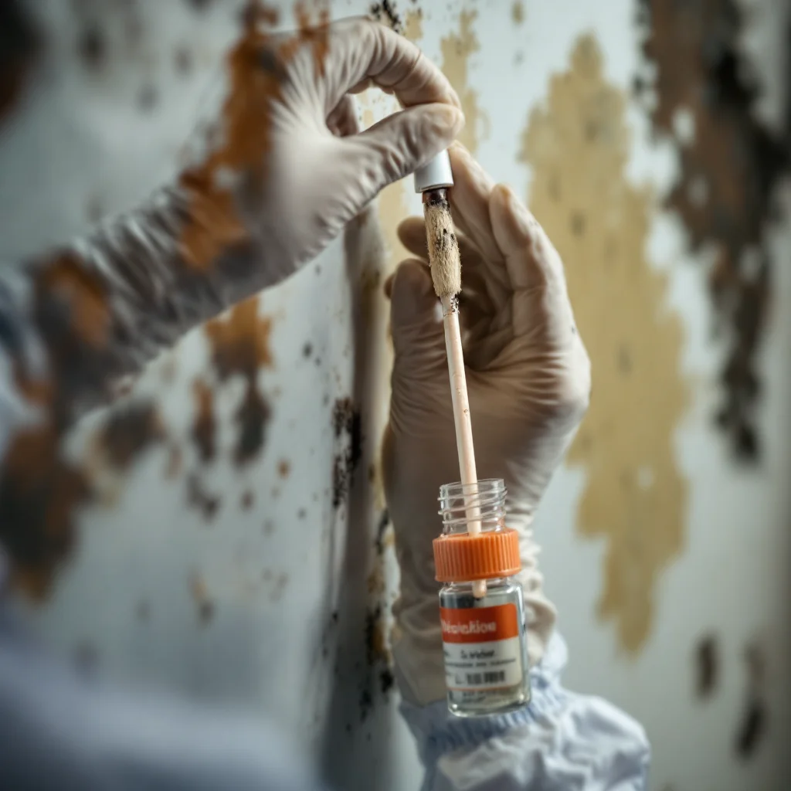

Black Mold Removal — Safe Containment, Certified Technicians

Black mold — specifically Stachybotrys chartarum — requires a different level of response than common mold varieties. It produces mycotoxins, thrives on cellulose materials like drywall and wood, and is almost always connected to a chronic moisture problem that wasn't addressed early. When you see it, you're seeing the surface of a colony that has been growing for some time.
When You Might Have Black Mold
True black mold (Stachybotrys) is distinctly dark green to black, often slimy when wet, and most commonly found in areas with chronic moisture:
- Behind drywall in basements or bathrooms with long-term moisture exposure
- Under carpets or flooring after a flood event that wasn't properly dried
- On ceiling tiles or wood structural members in spaces with inadequate ventilation
- In crawl spaces with poor vapor control and standing moisture
- Family members experiencing respiratory symptoms, headaches, or fatigue that improve when they leave the home
Important: not every dark-colored mold is Stachybotrys. Lab testing confirms species. However, any significant dark mold growth should be treated with full containment protocol until testing can confirm what you're dealing with.
Why Black Mold Cannot Be DIY-Treated
Two things go wrong when homeowners try to handle black mold themselves:
Disturbing it without containment spreads spores. Scrubbing, wiping, or blowing air at black mold releases mycotoxin-laden spores into the air. Without negative pressure containment, those spores travel through HVAC to every room in the home. Homeowners often feel worse immediately after attempting DIY removal — this is why.
Bleach doesn't work on porous materials. Bleach cleans the surface while the mold colony continues growing below it. On drywall or wood, the surface looks clean for a few weeks and then the mold returns — often with more coverage than before.
How We Remove Black Mold
- Free Inspection: We assess extent, identify the moisture source, and provide a written scope and price before touching anything.
- Full Containment: Plastic sheeting and negative air pressure establish an isolated work zone. Spores stay contained regardless of what happens during removal.
- Remove Affected Materials: Drywall, insulation, flooring, or other porous materials with Stachybotrys are removed entirely and properly disposed of. There is no safe way to clean black mold out of drywall.
- HEPA Vacuum and Treat: Non-porous structural surfaces are HEPA-vacuumed and treated with EPA-registered antimicrobial solution. Structural wood is treated in place where removal isn't practical.
- HEPA Air Scrubbing: Commercial air scrubbers run in the containment zone before it's opened to the rest of the home.
- Independent Clearance Testing: Third-party air sampling confirms mycotoxin and spore levels are within normal range. You get documentation that the problem is resolved.
What Does Black Mold Removal Cost?
- Small isolated patch (under 10 sq ft): $500–$1,500
- Mid-size area (10–100 sq ft): $1,500–$4,000
- Large / multi-area or structural involvement: $4,000–$9,000
Black mold jobs frequently end up in the mid to upper range because the visible patch is typically smaller than the actual colony behind the wall. The free inspection scopes the real extent before you commit to a price.
Do I need to leave my home during black mold removal?
For small contained jobs, you can remain home while staying away from the work area. For larger jobs with significant Stachybotrys or jobs near HVAC systems, we'll advise temporary relocation based on the specific scope and your household's health situation.
How do I know it's actually gone?
The only objective answer is independent clearance testing — air sampling by a third-party lab after remediation is complete. We recommend it on every black mold job. The test confirms spore and mycotoxin levels are back within normal range. That document is your proof.
Found Black Mold? Don't Disturb It First.
Call us before doing anything. We'll inspect at no charge, give you a written estimate, and tell you exactly what you're dealing with. Same-day response available.
📞 (719) 496-8287Schedule Free Inspection